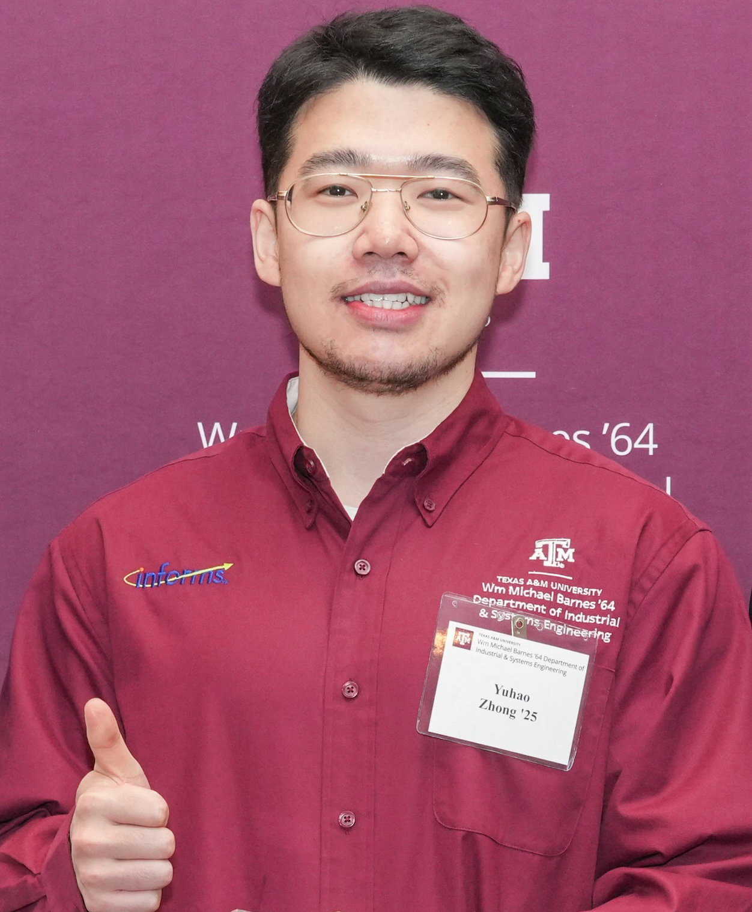

|  |
Yuhao ZhongPhD Candidate, advised by Prof. Satish BukkapatnamWm Michael Barnes '64 Department of Industrial and Systems Engineering Texas A&M University [hirobin_zhong at tamu.edu] [CV] [Google Scholar] [Github] [Linkedin] |
My research focuses on advancing Data Science techniques to address fundamental challenges related to quality and performance assurance, as well as knowledge discovery, primarily in Manufacturing processes and systems in the context of Industry 4.0/5.0. I am currently on the job market!
Current Research Areas
- Advancement of explainable AI and generative AI methods
- Process-structure-property (PSP) knowledge discovery and uncertainty quantification
- Defect detection and localization
- Human-centric autonomous robotic control and monitoring
Recognition
- 2024 U.S. Senator Phil Gramm Doctoral Fellowship
- 2024 Fox Graduate Fellowship
- 2023 and 2024 Texas A&M Institute of Data Science Student Ambassador Scholarship
- 2023 Winner of the IISE Data Analytics & Information Systems (DAIS) Student Best Paper Contest
Latest News
-
{% for post in site.posts limit: 3%}
-
{{ post.title }} - {{ post.date | date: "%B %d, %Y" }}
{{ post.excerpt | strip_html }}
{% endfor %}
Selected Publications
-
{% for paper in site.papers limit: 3 %}
-
{{ paper.title }}
Authors: {{ paper.authors }}
Journal/Conference: {{ paper.journal }}
Year: {{ paper.year }}
{% if paper.doi %} {% endif %}{{ paper.description }}
{% endfor %}